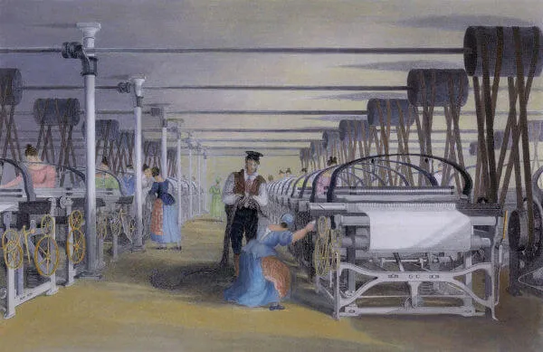

A Revolução Industrial teve início de maneira pioneira na Inglaterra, no século XVIII, e causou grandes transformações nas relações de trabalho e no sistema de produção.

A Revolução Industrial foi o período de grande desenvolvimento tecnológico
que teve início
na Inglaterra a partir da segunda metade do século XVIII e que se espalhou pelo mundo,
causando grandes transformações. Ela garantiu o surgimento da indústria e consolidou o
processo de formação do capitalismo.
O nascimento da indústria causou grandes transformações na economia mundial, assim como no
estilo de vida da humanidade, uma vez que acelerou a produção de mercadorias e a exploração
dos recursos da natureza. Além disso, foi responsável por grandes transformações no
processo
produtivo e nas relações de trabalho.
A Revolução Industrial foi iniciada de maneira pioneira na Inglaterra, a
partir da segunda
metade do século XVIII, e atribui-se esse pioneirismo aos ingleses pelo fato de que foi lá
que surgiu a primeira máquina a vapor, em 1698, construída por Thomas Newcomen e
aperfeiçoada por James Watt, em 1765. O historiador Eric Hobsbawm, inclusive, acredita que a
Revolução Industrial só foi iniciada de fato na década de 1780|1|.
O avanço tecnológico característico da Revolução Industrial permitiu um grande
desenvolvimento de maquinário voltado para a produção têxtil, isto é, de roupas. Com isso,
uma série de máquinas, como a “spinning Jenny”, “spinning frame”, “water frame” e a
“spinning mule”, foram criadas para tecer fios. Com essas máquinas, era possível tecer uma
quantidade de fios que manualmente exigiria a utilização de várias pessoas.
Posteriormente, no começo do século XIX, o desenvolvimento tecnológico foi utilizado
na
criação da locomotiva e das estradas de ferro, que, a partir da década de 1830,
foram
construídas por toda a Inglaterra. A construção das estradas de ferro contribuiu para
ampliar o crescimento industrial, uma vez que diminuiu as distâncias, ao tornar as viagens
mais curtas, e ampliou a capacidade de locomoção de mercadorias.
O desenvolvimento das estradas de ferro aproveitou aprosperidade da indústria inglesa, uma
vez que os financiadores de sua construção foram exatamente os capitalistas que prosperaram
na Revolução Industrial. Isso porque a indústria inglesa não conseguia absorver todo o
excedente de capital, fazendo com que os investimentos nas estradas de ferro acontecessem.
- A Inglaterra foi a nação pioneira no desenvolvimento industrial e
tecnológico no mundo.
- Por meio da Revolução Industrial, o capitalismo consolidou-se como
sistema econômico
vigente.
- O desenvolvimento da máquina a vapor é considerado como o ponto de
partida da Revolução
Industrial.
- Causou profundas transformações no modo de produção e também nas relações
entre patrão e
trabalhador.
- Durante o auge da Revolução Industrial, os trabalhadores ingleses
recebiam salários
baixíssimos e eram obrigados a suportar uma longa jornada de trabalho.
- A intensa exploração do trabalho do proletário fez com que os
trabalhadores organizassem-se
em sindicatos.
- Dois movimentos de trabalhadores foram muito importantes no século XIX: o
ludismo e o
cartismo.
- A Revolução Industrial aconteceu de maneira pioneira na Inglaterra por
uma junção de
fatores, que englobam as grandes reservas de carvão do país, os cercamentos, o excedente de
capital existente no país etc.
- As transformações econômicas, sociais e tecnológicas proporcionadas pela
Revolução
Industrial dividem-se em fases, segundo os avanços produtivos, no campo científico e em
diversas outras áreas do setor econômico e industrial.
- Pode-se dividir a Revolução Industrial em: Primeira Revolução Industrial,
Segunda Revolução
Industrial e Terceira Revolução Industrial.
- Diversas foram as consequências da Revolução Industrial. Houve aumento da
produtividade,
mudança nas relações de trabalho, alterações no modo de vida e padrões de consumo da
sociedade; alterou-se a relação entre o homem e a natureza, houve avanços em diversos campos
do conhecimento, entre outras mudanças.
A Revolução Industrial também gerou grandes transformações no modo de produção de
mercadorias. Antes do surgimento da indústria, a produção acontecia pelo modo
de produção
manufatureiro, isto é, um modo de produção manual que utilizava a capacidade artesanal
daquele que produzia. Assim, a manufatura foi substituída pela maquinofatura.
Com a maquinofatura, não era mais necessária a utilização de vários trabalhadores
especializados para produzir uma mercadoria, pois uma pessoa manuseando as máquinas
conseguiria fazer todo o processo sozinha. Com isso, o salário do trabalhador
despencou, uma
vez que não eram mais necessários funcionários com habilidades manuais.
Isso é evidenciado pela estatística trazida por Eric Hobsbawm que mostra como o salário do
trabalhador inglês caiu com o surgimento da indústria. O exemplo levantado foi Bolton,
cidade no oeste da Inglaterra. Lá, em 1795, um artesão ganhava 33 xelins, mas, em 1815, o
valor pago havia caído para 14 xelins e, entre 1829 e 1834, esse salário havia despencado
para quase 6 xelins |2|. Percebemos aqui uma queda brusca no salário e esse processo deu-se
em toda a Inglaterra.
Além do baixo salário, os trabalhadores eram obrigados a lidar com uma carga de
trabalho
extenuante. Nas indústrias inglesas do período da Revolução Industrial, a
jornada diária de
trabalho costumava ser de até 16 horas com apenas 30 minutos de pausa para o almoço. Os
trabalhadores que não aguentassem a jornada eram sumariamente substituídos por
outros.
Não havia nenhum tipo de segurança para os trabalhadores e constantemente
acidentes
aconteciam. O acidente mais comum era quando os trabalhadores tinham seus dedos presos na
máquina, e muitos os perdiam. Os trabalhadores que se afastavam por problemas de saúde
poderiam ser demitidos e não receberiam seu salário. Só eram pagos os funcionários que
trabalhavam efetivamente.
Essa situação degradante fez com que os trabalhadores mobilizassem-se pouco a pouco contra
seus patrões. Isso levouà criação das organizações de trabalhadores (mais
conhecidas no
Brasil como sindicatos) e chamadas na Inglaterra de trade
union. Os trabalhadores exigiam
melhorias salariais e redução na jornada de trabalho.
Dois grandes movimentos de trabalhadores surgiram dessas organizações foram o
ludismo e o
cartismo. O ludismo teve atuação destacada no período
entre 1811 e 1816, e sua estratégia
consistia em invadir as fábricas e destruir as máquinas. Isso acontecia
porque os adeptos do
ludismo afirmavam que as máquinas estavam roubando os empregos dos homens e, portanto,
deveriam ser destruídas.
O movimento cartista, por sua vez, surgiu na década de 1830 e lutava por
direitos
trabalhistas e políticos para a classe de trabalhadores da Inglaterra. Uma das principais
exigências dos cartistas era o sufrágio universal masculino, isto é, o
direito de que todos
os homens pudessem votar. Os cartistas também exigiam que sua classe tivesse
representatividade no Parlamento inglês.
A mobilização de trabalhadores resultou em algumas melhorias ao longo do século XIX. A
pressão exercida pelos trabalhadores dava-se, principalmente, por meio de greve. Uma das
melhorias mais sensíveis conquistadas pelos trabalhadores foi a redução da jornada de
trabalho para 10 horas diárias, por exemplo.
A mobilização de trabalhadores enquanto classe, isto é, pobres (proletários), não foi um
fenômeno que surgiu especificamente por causa da Revolução Industrial. Nas palavras de Eric
Hobsbawm, o enfrentamento dos patrões pelos trabalhadores aconteceu, porque a Revolução
Francesa deu-lhes confiança para isso, enquanto“a Revolução Industrial trouxe a necessidade
de mobilização permanente”|3|.
A Revolução Industrial despontou pioneiramente, na segunda metade do século XVIII, na
Inglaterra e gradativamente foi espalhando-se pela Europa e, em seguida para todo o mundo.
Mas por que necessariamente isso ocorreu na Inglaterra? A resposta para isso é
encontrada um
pouco no acaso e um pouco na própria história inglesa.
Primeiramente, é importante estabelecer que o desenvolvimento tecnológico e industrial na
Inglaterra foi possível, porque a burguesia estabeleceu-se como classe e garantiu o
desenvolvimento da economia inglesa na direção do capitalismo. Isso aconteceu
no século
XVII, com a Revolução Gloriosa.
A Revolução Gloriosa aconteceu em 1688 e consolidou o fim da monarquia absolutista na
Inglaterra (que já vinha enfraquecida desde a Revolução Puritana, na década de 1640). Com
isso, a Inglaterra transformou-se em uma monarquia constitucional parlamentarista, na qual o
poder do rei não estava acima do Parlamento e nem da Constituição, no caso da Inglaterra da
Declaração de Direitos – Bill of Rights.
Assim, a burguesia conseguiu consolidar-se enquanto classe e governar de maneira a atender
aos seus interesses econômicos. Um acontecimento fundamental para o desenvolvimento do
comércio inglês ocorreu no meio das duas revoluções do século XVII, citadas acima. Em 1651,
Oliver Cromwell decretou os Atos de Navegação, lei que decretava que
mercadorias compradas
ou vendidas pela Inglaterra somente seriam transportadas por embarcações inglesas.
Essa lei foi fundamental, pois protegeu o comércio, enfraqueceu a concorrência dos ingleses
e garantiu que os navios ingleses controlassem as rotas comerciais marítimas. Isso
enriqueceu a burguesia inglesa e permitiu-lhes acumular capital. Esse capital foi utilizado
no desenvolvimento de máquinas e na instalação das indústrias.
Mas não bastava somente excedente de capital para garantir o desenvolvimento industrial.
Eram necessários trabalhadores, e a Inglaterra do século XVIII tinha mão de obra
excedente.
Isso está relacionado com os cercamentos que aconteciam na Inglaterra e que se
intensificaram a partir do século XVII.
Os cercamentos aconteciam por força da Lei dos Cercamentos (Enclosure
Acts), lei inglesa que
permitia que as terras comuns fossem cercadas e transformadas em pasto. As terras comuns
eram parte do sistema feudal, que estipulava determinadas áreas para serem ocupadas e
cultivadas pelos camponeses.
Com os cercamentos, os camponeses que habitavam essas terras foram
expulsos, e as terras
foram transformadas em pasto para a criação de ovelhas. A criação de ovelhas era o que
fornecia a lã utilizada em larga escala na produção têxtil do país. Os camponeses expulsos
de suas terras e sem ter para onde ir mudaram-se para as grandes cidades.
Sem nenhum tipo de qualificação, esses camponeses viram-se obrigados a trabalhar nos únicos
locais que forneciam empregos – as indústrias. Assim, as indústrias que se desenvolviam na
Inglaterra tinham mão de obra excedente. Isso garantia aos patrões poder de barganha, pois
poderiam forçar os trabalhadores a aceitarem salários de fome por uma jornada diária
exaustiva.
A adesão dos trabalhadores às indústrias ocorreu de maneira massiva também
por uma lei
inglesa que proibia as pessoas de “vadiagem”. Assim, pessoas que fossem pegas vagando pelas
ruas sem emprego poderiam ser punidas com castigos físicos e até mesmo com a morte, caso
fossem reincidentes.
Por último, destaca-se que o acaso e o fortuito também contribuíram para que a Inglaterra
despontasse pioneiramente. O desenvolvimento das máquinas e das indústrias apenas ocorreu,
porque a Inglaterra tinha grandes reservas dos dois materiais essenciais para isso:
o carvão
e o ferro. Com reservas de carvão e ferro abundantes, a Inglaterra pôde
desenvolver sua
indústria desenfreadamente.
A Revolução Industrial corresponde às modificações econômicas e tecnológicas que
consolidaram o sistema capitalista e permitiram o surgimento de novas formas de organização
da sociedade. As transformações tecnológicas, econômicas e sociais vividas na Europa
Ocidental, inicialmente limitadas à Inglaterra, em meados do século XVIII, tiveram diversos
desdobramentos, os quais podemos chamar de fases. Essas fases correspondem ao processo
evolutivo das tecnologias desenvolvidas e as consequentes mudanças socioeconômicas. São
elas:
- Primeira Revolução Industrial;
- Segunda Revolução Industrial;
- Terceira Revolução Industrial.
A Primeira Revolução Industrial refere-se ao processo de evolução tecnológica vivido a
partir do século XVIII na Europa Ocidental, entre 1760 e 1850, estabelecendo uma nova
relação entre a sociedade e o meio, bem como possibilitando a existência de novas formas de
produção que transformaram o setor industrial, dando início a um novo padrão de
consumo.Essa fase é marcada especialmente pela:
- substituição da energia produzida pelo homem por energias como a vapor,
eólica e hidráulica;
- substituição da produção artesanal (manufatura) pela indústria
(maquinofatura);
- existência de novas relações de trabalho.
As principais invenções dessa fase que modificaram todo o cenário vivido na época
foram:
- a utilização do carvão como fonte de energia;
- o consequente desenvolvimento da máquina a vapor e da
locomotiva;
- desenvolvimento do telégrafo, um dos primeiros meios de
comunicação quase instantânea.
A produção modificou-se, diminuindo o tempo e aumentando a produtividade; as invenções
possibilitaram o melhor escoamento de matérias-primas, bem como de consumidores, e também
favoreceram a distribuição dos bens produzidos.
A Segunda Revolução Industrial refere-se ao período entre a segunda metade
do século XIX
até meados do século XX, tendo seu fim durante a Segunda Guerra Mundial. A
industrialização
avançou os limites geográficos da Europa Ocidental, espalhando-se por países como Estados
Unidos, Japão e demais países da Europa.
Compreende a fase de avanços tecnológicos ainda maiores que os vivenciados na primeira fase,
bem como o aperfeiçoamento de tecnologias já existentes. O mundo pôde
vivenciar diversas
novas criações, que aumentaram ainda mais a produtividade e consequentemente os lucros das
indústrias. Houve nesse período, também, grande incentivo às pesquisas, especialmente no
campo da medicina.
As principais invenções dessa fase estão associadas ao uso do petróleo como fonte de
energia, utilizado na nova invenção: o motor à combustão. A
eletricidade, que antes era
utilizada apenas para desenvolvimento de pesquisas em laboratórios, nesse período, começou a
ser usada para o funcionamento de motores, com destaque para os motores elétricos e
à
explosão. O ferro, que antes era largamente utilizado, passou a ser substituído
pelo aço.
A Terceira Revolução Industrial, também conhecida como Revolução
Tecnocientífica,
iniciou-se na metade do século XX, após a Segunda Guerra Mundial. Essa fase representa uma
revolução não só no setor industrial, visto que passou a relacionar não só o desenvolvimento
tecnológico voltado ao processo produtivo, mas também ao avanço científico,
deixando de
limitar-se a apenas alguns países e espalhando-se por todo o mundo.
As transformações possibilitadas pelos avanços tecnocientíficos são vivenciadas até os dias
atuais, e cada nova descoberta representa um novo patamar alcançado dentro dessa fase da
revolução, consolidando o que ficou conhecido como capitalismo financeiro.
A introdução da
biotecnologia, robótica, avanços na área da genética, telecomunicações, eletrônica,
transporte, entre outras áreas, transformaram não só a produção, como também as relações
sociais, o modo de vida da sociedade e o espaço geográfico.
Todo esse desenvolvimento proporcionado pelos avanços obtidas nas diversas
áreas científicas
relacionam-se ao que chamamos de globalização: tudo converge para a diminuição do
tempo e
das distâncias, ligando pessoas, lugares, transmitindo informações
instantaneamente,
superando, então, os desafios e obstáculos que permeiam a localização geográfica, as
diferenças culturais, físicas e sociais.
De um modo geral, a Revolução Industrial transformou não só o setor econômico e industrial,
como também as relações sociais, as relações entre o homem e a natureza,
provocando
alterações no modo de vida das pessoas, nos padrões de consumo e no meio
ambiente. Cada fase
da revolução representou diferentes transformações e consequências mediante os avanços
obtidos em cada período.
A Primeira Revolução Industrial representou uma nova organização no
modo capitalista. Nesse
período houve um aumento significativo de indústrias, bem como o aumento significativo da
produtividade (produção em menor tempo). O homem, ao ser substituído pela máquina, saiu da
zona rural para ir para as cidades em busca de novas oportunidades, dando início ao processo
de urbanização.
Esse processo culminou no crescimento desenfreado das cidades, na
marginalização de boa
parte da população, bem como em problemas de ordem social, como miséria, violência, fome.
Nessa fase, também, a sociedade organizou-se em dois polos: de um lado a burguesia e do
outro o proletariado.
A Segunda Revolução Industrial teve como principais consequências, mediante
o maior avanço
tecnológico, o aumento da produção em massa em bem menos tempo,
consequentemente o aumento
do comércio e modificação nos padrões de consumo; muitos países passaram a
se
industrializar, especialmente os mais ricos, dominando, então, economicamente diversos
outros países (expansão territorial e exploração de matéria-prima).
O avanço nos transportes possibilitou maior e melhor escoamento de mercadorias e
trânsito de
pessoas; surgiram as grandes cidades e com elas também os problemas como
superpopulação;
aumento das doenças; desemprego e aumento da mão de obra barata e novas relações de
trabalho.
A Terceira Revolução Industrial e a nova integração entre ciência,
tecnologia e
produção possibilitaram avanços na medicina; a invenção de robôs capazes de
fazer trabalho
extremamente minucioso e preciso; houve avanços na área da genética, trazendo novas técnicas
que melhoraram a qualidade de vida das pessoas; bem como diminuição das distâncias
entre os
povos e a maior difusão de notícias e informações por meio de novos meios de
comunicação; o
capitalismo financeiro consolidou-se e houve aumento do número de empresas
multinacionais.
E não menos importante, todas essas transformações possibilitadas pela Revolução Industrial
como um todo transformaram o modo como o homem relaciona-se com o meio. A
apropriação dos
recursos naturais para viabilizar as produções e os avanços tecnocientíficos
tem causado
grande impacto ambiental.
Atualmente, as alterações provocadas no meio ambiente têm sido amplamente
discutidas pelas
comunidades internacionais, órgãos e entidades, que expressam a importância de mudar o
modelo de desenvolvimento econômico que explora os recursos naturais sem pensar nas gerações
futuras.
|1| HOBSBAWM, Eric J. A Era das Revoluções 1789-1848. Rio de Janeiro: Paz e Terra, 2014, p.
59.
|2| Idem, p. 79.
|3| Idem, p. 326-327.